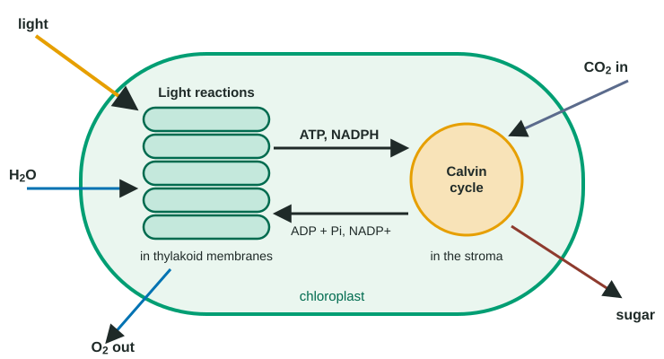

Almost all the food on Earth is made, first, by photosynthesis, and almost all the oxygen in the air was released by it. Photosynthesis captures light energy and stores it in the chemical bonds of sugar. This page builds the process from the overall equation down to the membrane, so that you can follow every electron and every hydrogen ion, which is exactly what exam questions ask you to do.
The big picture
The overall reaction is:
6 CO₂ + 6 H₂O + light energy → C₆H₁₂O₆ + 6 O₂
In topic 3.4 terms, this is a redox reaction that runs uphill. Water is oxidized: it loses electrons and becomes O₂. Carbon dioxide is reduced: it gains electrons (with hydrogen) and becomes sugar. Moving electrons from water, which holds them tightly, onto carbon takes energy, and that energy comes from light. The products hold more energy than the reactants, so photosynthesis is endergonic overall.
Organisms that make their own organic molecules this way are autotrophs: plants, algae and cyanobacteria. Heterotrophs, including you, get organic molecules by eating autotrophs or other heterotrophs.
Photosynthesis happens in two linked stages in the chloroplast (Figure 1):

| Light reactions | Calvin cycle | |
|---|---|---|
| Where | Thylakoid membranes | Stroma |
| Inputs | Light, H₂O, ADP + Pi, NADP⁺ | CO₂, ATP, NADPH |
| Outputs | O₂, ATP, NADPH | Sugar, ADP + Pi, NADP⁺ |
| Energy change | Light energy into chemical energy of ATP and NADPH | Chemical energy of ATP and NADPH into sugar |
| Stops in the dark? | At once | Within minutes, as ATP and NADPH run out |
Light and pigments
Light travels in packets of energy called photons. Visible light runs from about 400 nm (violet) to 700 nm (red) in wavelength; shorter wavelengths carry more energy per photon.
A pigment absorbs some wavelengths and reflects others. Chloroplasts hold several:
- Chlorophyll a, the main pigment, absorbs violet-blue and red light strongly.
- Chlorophyll b and carotenoids are accessory pigments. They absorb other wavelengths, especially blue-green, and pass the energy to chlorophyll a.
Neither chlorophyll absorbs much green light, which is reflected; that is why leaves look green.
An absorption spectrum shows how strongly one pigment absorbs each wavelength. An action spectrum shows how fast photosynthesis runs at each wavelength. The action spectrum is high in blue and red and lowest in green, matching the pigments. It is also high at wavelengths, such as 475-500 nm, where chlorophyll a absorbs little but chlorophyll b and carotenoids absorb strongly: evidence that accessory pigments pass their energy on. In a classic experiment, a strand of alga was lit with a spread-out spectrum, and oxygen-seeking bacteria crowded around the parts lit with blue and red light.
The light reactions, step by step
Pigments are grouped with proteins into photosystems in the thylakoid membrane. Each has a light-harvesting complex of hundreds of pigment molecules that funnel energy to a reaction center, where a special pair of chlorophyll a molecules gives up an excited electron. There are two photosystems, numbered in the order they were discovered, not the order they work: photosystem II (reaction center P680) acts first, photosystem I (P700) second. Follow Figure 2:

- Photosystem II absorbs light. Its reaction center passes an excited electron to an acceptor.
- Water is split. The oxidized reaction center pulls electrons from water: 2 H₂O → 4 H⁺ + 4 e⁻ + O₂. The electrons replace those lost, the O₂ leaves the leaf, and the H⁺ stay in the thylakoid space.
- Electron transport. The electrons pass along an electron transport chain of carriers in the membrane. Each transfer releases a little energy; the cytochrome complex uses it to pump H⁺ from the stroma into the thylakoid space.
- Photosystem I absorbs light and boosts the electrons to high energy again.
- NADPH forms. The electrons are passed to the electron carrier NADP⁺, which picks them up with H⁺ to become NADPH, on the stroma side.
- ATP forms. H⁺ now crowds the thylakoid space (about pH 5) compared with the stroma (about pH 8). This proton gradient stores energy. The only easy way out is through ATP synthase, a channel protein whose rotating part joins ADP and Pi into ATP as H⁺ flow through. Making ATP with an H⁺ gradient is chemiosmosis; when light powers it, it is called photophosphorylation.
Three things raise the H⁺ gradient: H⁺ released by water splitting inside, H⁺ pumped in by the cytochrome complex, and H⁺ taken from the stroma when NADPH is made.
Worked example: a gradient without light. Researchers soaked isolated thylakoids at pH 4 in the dark, then moved them to pH 8 with ADP and Pi. They made 100 units of ATP. Thylakoids soaked and kept at pH 8 made 2; soaked and kept at pH 4 made 3.
Step 1: what differs? Only the first sample had a gradient: H⁺ concentration inside was 10⁴ (10,000) times that outside.
Step 2: conclude. An H⁺ gradient alone, with no light and no electron flow, is enough to make ATP. Light's job is to build the gradient. This is strong evidence for chemiosmosis.
Step 3: predict. Add a chemical that lets H⁺ leak through the membrane, and the gradient runs down without passing through ATP synthase: little ATP.
The Calvin cycle
In the stroma, a cycle of enzyme-catalyzed reactions builds sugar from CO₂. You do not need to memorize its steps or molecules, but you should know what goes in, what comes out, and why.
- Carbon fixation. CO₂ from the air, which enters the leaf through the stomata, is attached to a five-carbon molecule already in the cycle.
- Reduction. ATP supplies energy and NADPH supplies electrons to turn the products into a three-carbon sugar. Some of this sugar leaves the cycle and is used to build glucose, sucrose, starch, cellulose and other molecules.
- Regeneration. More ATP is used to rebuild the five-carbon starting molecule, so the cycle can turn again.
The ADP, Pi and NADP⁺ released go back to the thylakoids to be recharged. To make one glucose, the cycle fixes 6 CO₂ and spends 18 ATP and 12 NADPH.
What limits the rate of photosynthesis?
The photosynthetic rate can be measured as O₂ released, CO₂ taken up, or, in class, the time leaf disks take to float as O₂ fills their air spaces. It depends on light intensity, CO₂ concentration and temperature, and the one in shortest supply is the limiting factor (topic 3.3).
Worked example: reading a light curve. In normal air (0.04% CO₂) a leaf's net CO₂ uptake rises from 3.0 at 10% sunlight to 9.0 at 40%, then levels off near 9.6. At 0.10% CO₂ it keeps rising, to 18.3 at full sunlight.
At 10% light both CO₂ levels give the same uptake (3.0 and 3.2): light is limiting.
Above 40% light in normal air more light changes nothing but more CO₂ nearly doubles uptake: CO₂ is limiting.
Percent increase from extra CO₂ at full light = (18.3 − 9.6) ÷ 9.6 × 100 ≈ 91%.
In the dark net uptake is −1.5: the leaf's own cellular respiration releases CO₂ with no photosynthesis to offset it.
Where photosynthesis came from
Photosynthesis that splits water and releases O₂ first arose in prokaryotes, in ancestors of today's cyanobacteria, more than 2.4 billion years ago. Over hundreds of millions of years their O₂ built up in the oceans and then in the atmosphere, which made it possible for organisms to use O₂ to release energy from food.
Chloroplasts descend from a cyanobacterium taken in by an early eukaryotic cell (endosymbiosis, topic 2.10). The evidence: chloroplasts have their own circular DNA and bacteria-like ribosomes, two membranes, divide on their own, and have photosystems much like those of cyanobacteria.
How the exam tests this
- Trace electrons from water to NADPH and H⁺ from the stroma to the thylakoid space and back through ATP synthase.
- Predict what a block anywhere in the chain (a weed killer, a leaky membrane, darkness) does to O₂, NADPH, ATP and CO₂ fixation.
- Read absorption and action spectra, and DCPIP or leaf-disk data, including which tube is the control for what.
- Identify the limiting factor on a rate curve.